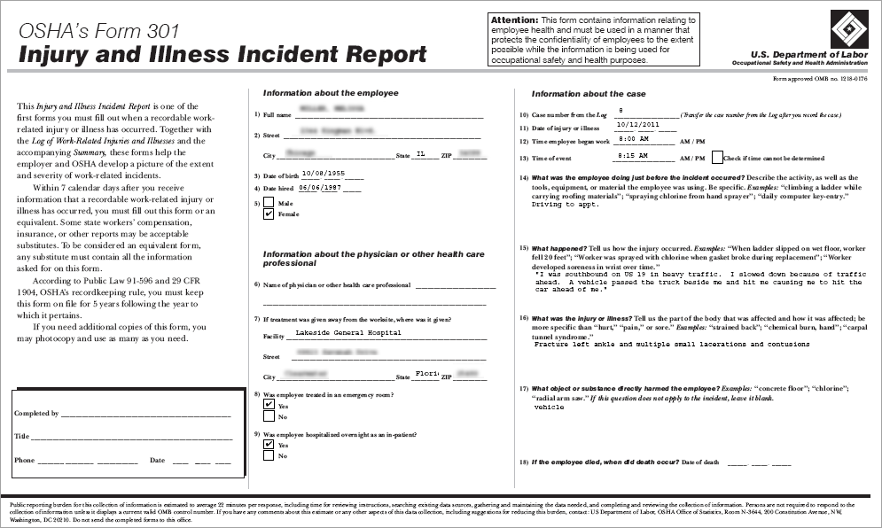

With Canadian clients, this feature is only available for use in Ontario and British Columbia.
A Form OSHA 301 is required to accompany each entry on the OSHA 300 log. You should complete the incident record before generating the OSHA 301.
You should first complete an incident before generating the OSHA 301.
On the Injuries/Illness tab of an incident report, open the injury/illness record you are reporting on.
On the Occ Injury/Illness Case tab, choose Actions»Generate OSHA 301.
Alternatively, you can access this report from the Reports module; you will be prompted for the case number. To generate the report for a non-OSHA-recordable case, in the Case No look-up selector change the view to display all cases.

The form displays the employee’s information as entered in the Incident Report. Enter any new information needed. If the report form has multiple pages, buttons are available at the bottom of the form to move between pages.
When the information is complete, use the toolbar option to print a copy of the report.
When you are satisfied that the report is complete, click Save to save the report and return to the previous screen.
The OSHA Forms 300, 300A, and 301 can be generated from the Reports module. OSHA’s rule “Improve Tracking of Workplace Injuries and Illnesses” requires covered employers to electronically submit injury and illness data. Cority supports electronic submission within the Reports module.